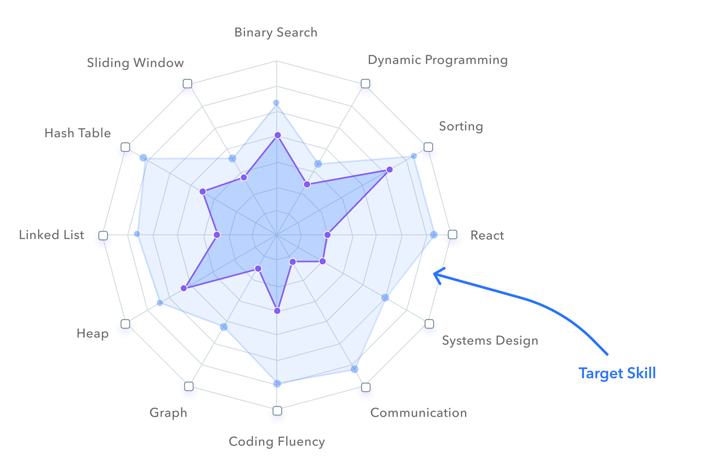

<template>
  <require from="@fortawesome/fontawesome-free/css/all.min.css"></require>
  <require
    from="../../resources/custom-elements/loading-indicator/loading-indicator"
  ></require>
  <require from="../header/app-navbar"></require>
  <require from="../main/home/home"></require>
  <require from="../footer/app-footer"></require>
  <!-- <require from="../main/user/users""></require> -->

  <section>
    <!-- header/nav part of app -->
    <header id="app-header">
      <!-- Good way to create nav menu using separate nav folder -->
      <app-navbar router.bind="router" containerless></app-navbar>
      <!-- Basic way to create nav menu -->
      <!-- <div class="nav">
        <div id="logo">
          
        </div>
        <ul class="nav_item_list">
          <li
            repeat.for="route of router.navigation"
            class="nav_item ${route.isActive?'active':''}"
          >
            <a href.bind="route.href" style="text-decoration: none"
              >${route.title}</a
            >
          </li>
          <li>
            <i
              class="fa fa-cog fa-spin fa-1x"
              style="margin: 0 auto"
              if.bind="router.isNavigating"
            ></i>
          </li>
        </ul>
      </div> -->
    </header>

    <!-- main content part of app -->
    <main id="app-main">
      <router-view containerless></router-view>
      <loading-indicator loading.bind="router.isNavigation"></loading-indicator>

      <!-- rendering component directly by require that component and use as element -->
      <!-- <home></home>
      <users></users> -->
      <!-- render other component with help of compose element -->
      <!-- <compose view-model="../main/user/users"></compose>
      <div class="main">
        <compose view-model="../main/events/events"></compose>
        <compose view-model="../main/sponsors/sponsors"></compose>
      </div> -->
    </main>

    <!-- footer part of app -->
    <footer id="app-footer">
      <app-footer containerless></app-footer>
    </footer>
  </section>
</template>
